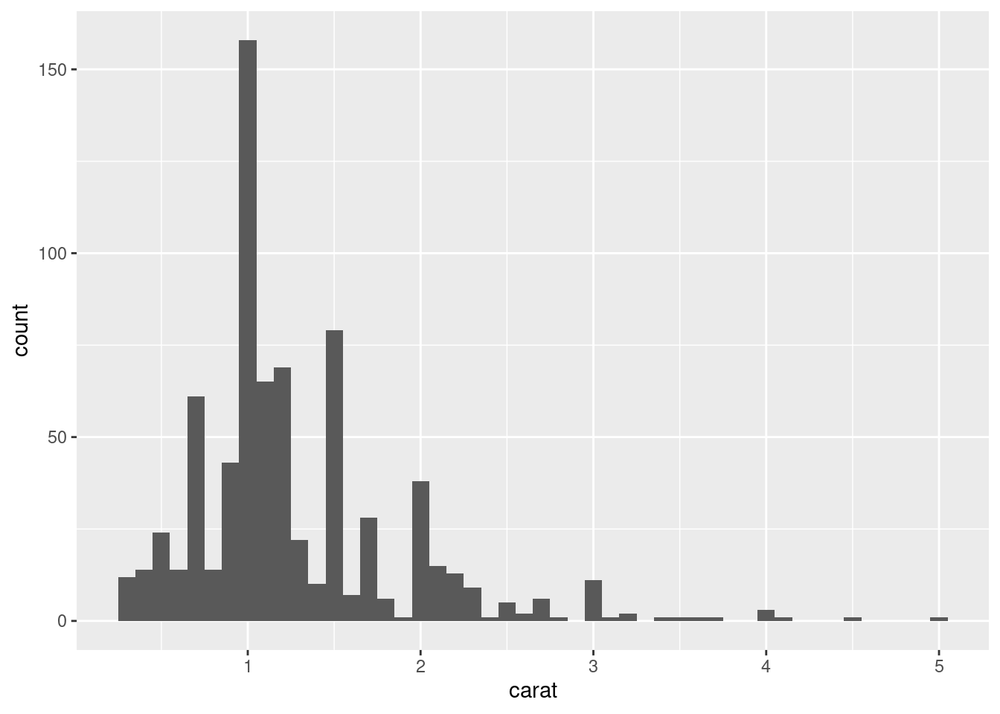

data2019 <- readxl::read_excel("data/y2019.xlsx")
data2020 <- readxl::read_excel("data/y2020.xlsx")
data2021 <- readxl::read_excel("data/y2021.xlsx")
data2022 <- readxl::read_excel("data/y2022.xlsx")26 Iteration
26.1 Introduction
In this chapter, you’ll learn tools for iteration, repeatedly performing the same action on different objects. Iteration in R generally tends to look rather different from other programming languages because so much of it is implicit and we get it for free. For example, if you want to double a numeric vector x in R, you can just write 2 * x. In most other languages, you’d need to explicitly double each element of x using some sort of for loop.
This book has already given you a small but powerful number of tools that perform the same action for multiple “things”:
-
facet_wrap()andfacet_grid()draws a plot for each subset. -
group_by()plussummarize()computes summary statistics for each subset. -
unnest_wider()andunnest_longer()create new rows and columns for each element of a list-column.
Now it’s time to learn some more general tools, often called functional programming tools because they are built around functions that take other functions as inputs. Learning functional programming can easily veer into the abstract, but in this chapter we’ll keep things concrete by focusing on three common tasks: modifying multiple columns, reading multiple files, and saving multiple objects.
26.1.1 Prerequisites
In this chapter, we’ll focus on tools provided by dplyr and purrr, both core members of the tidyverse. You’ve seen dplyr before, but purrr is new. We’re just going to use a couple of purrr functions in this chapter, but it’s a great package to explore as you improve your programming skills.
26.2 Modifying multiple columns
Imagine you have this simple tibble and you want to count the number of observations and compute the median of every column.
You could do it with copy-and-paste:
That breaks our rule of thumb to never copy and paste more than twice, and you can imagine that this will get very tedious if you have tens or even hundreds of columns. Instead, you can use across():
across() has three particularly important arguments, which we’ll discuss in detail in the following sections. You’ll use the first two every time you use across(): the first argument, .cols, specifies which columns you want to iterate over, and the second argument, .fns, specifies what to do with each column. You can use the .names argument when you need additional control over the names of output columns, which is particularly important when you use across() with mutate(). We’ll also discuss two important variations, if_any() and if_all(), which work with filter().
26.2.1 Selecting columns with .cols
The first argument to across(), .cols, selects the columns to transform. This uses the same specifications as select(), Section 3.3.2, so you can use functions like starts_with() and ends_with() to select columns based on their name.
There are two additional selection techniques that are particularly useful for across(): everything() and where(). everything() is straightforward: it selects every (non-grouping) column:
Note grouping columns (grp here) are not included in across(), because they’re automatically preserved by summarize().
where() allows you to select columns based on their type:
-
where(is.numeric)selects all numeric columns. -
where(is.character)selects all string columns. -
where(is.Date)selects all date columns. -
where(is.POSIXct)selects all date-time columns. -
where(is.logical)selects all logical columns.
Just like other selectors, you can combine these with Boolean algebra. For example, !where(is.numeric) selects all non-numeric columns, and starts_with("a") & where(is.logical) selects all logical columns whose name starts with “a”.
26.2.2 Calling a single function
The second argument to across() defines how each column will be transformed. In simple cases, as above, this will be a single existing function. This is a pretty special feature of R: we’re passing one function (median, mean, str_flatten, …) to another function (across). This is one of the features that makes R a functional programming language.
It’s important to note that we’re passing this function to across(), so across() can call it; we’re not calling it ourselves. That means the function name should never be followed by (). If you forget, you’ll get an error:
df |>
group_by(grp) |>
summarize(across(everything(), median()))This error arises because you’re calling the function with no input, e.g.:
median()26.2.3 Calling multiple functions
In more complex cases, you might want to supply additional arguments or perform multiple transformations. Let’s motivate this problem with a simple example: what happens if we have some missing values in our data? median() propagates those missing values, giving us a suboptimal output:
It would be nice if we could pass along na.rm = TRUE to median() to remove these missing values. To do so, instead of calling median() directly, we need to create a new function that calls median() with the desired arguments:
This is a little verbose, so R comes with a handy shortcut: for this sort of throw away, or anonymous1, function you can replace function with \2:
In either case, across() effectively expands to the following code:
When we remove the missing values from the median(), it would be nice to know just how many values were removed. We can find that out by supplying two functions to across(): one to compute the median and the other to count the missing values. You supply multiple functions by using a named list to .fns:
If you look carefully, you might intuit that the columns are named using a glue specification (Section 14.3.2) like {.col}_{.fn} where .col is the name of the original column and .fn is the name of the function. That’s not a coincidence! As you’ll learn in the next section, you can use .names argument to supply your own glue spec.
26.2.4 Column names
The result of across() is named according to the specification provided in the .names argument. We could specify our own if we wanted the name of the function to come first3:
The .names argument is particularly important when you use across() with mutate(). By default, the output of across() is given the same names as the inputs. This means that across() inside of mutate() will replace existing columns. For example, here we use coalesce() to replace NAs with 0:
If you’d like to instead create new columns, you can use the .names argument to give the output new names:
26.2.5 Filtering
across() is a great match for summarize() and mutate() but it’s more awkward to use with filter(), because you usually combine multiple conditions with either | or &. It’s clear that across() can help to create multiple logical columns, but then what? So dplyr provides two variants of across() called if_any() and if_all():
26.2.6 across() in functions
across() is particularly useful to program with because it allows you to operate on multiple columns. For example, Jacob Scott uses this little helper which wraps a bunch of lubridate functions to expand all date columns into year, month, and day columns:
across() also makes it easy to supply multiple columns in a single argument because the first argument uses tidy-select; you just need to remember to embrace that argument, as we discussed in Section 25.3.2. For example, this function will compute the means of numeric columns by default. But by supplying the second argument you can choose to summarize just selected columns:
26.2.7 Compare with pivot_longer()
Before we go on, it’s worth pointing out an interesting connection between across() and pivot_longer() (Section 5.3). In many cases, you perform the same calculations by first pivoting the data and then performing the operations by group rather than by column. For example, take this multi-function summary:
We could compute the same values by pivoting longer and then summarizing:
And if you wanted the same structure as across() you could pivot again:
This is a useful technique to know about because sometimes you’ll hit a problem that’s not currently possible to solve with across(): when you have groups of columns that you want to compute with simultaneously. For example, imagine that our data frame contains both values and weights and we want to compute a weighted mean:
There’s currently no way to do this with across()4, but it’s relatively straightforward with pivot_longer():
If needed, you could pivot_wider() this back to the original form.
26.2.8 Exercises
-
Practice your
across()skills by:Computing the number of unique values in each column of
palmerpenguins::penguins.Computing the mean of every column in
mtcars.Grouping
diamondsbycut,clarity, andcolorthen counting the number of observations and computing the mean of each numeric column.
What happens if you use a list of functions in
across(), but don’t name them? How is the output named?Adjust
expand_dates()to automatically remove the date columns after they’ve been expanded. Do you need to embrace any arguments?-
Explain what each step of the pipeline in this function does. What special feature of
where()are we taking advantage of?
26.3 Reading multiple files
In the previous section, you learned how to use dplyr::across() to repeat a transformation on multiple columns. In this section, you’ll learn how to use purrr::map() to do something to every file in a directory. Let’s start with a little motivation: imagine you have a directory full of excel spreadsheets5 you want to read. You could do it with copy and paste:
And then use dplyr::bind_rows() to combine them all together:
data <- bind_rows(data2019, data2020, data2021, data2022)You can imagine that this would get tedious quickly, especially if you had hundreds of files, not just four. The following sections show you how to automate this sort of task. There are three basic steps: use list.files() to list all the files in a directory, then use purrr::map() to read each of them into a list, then use purrr::list_rbind() to combine them into a single data frame. We’ll then discuss how you can handle situations of increasing heterogeneity, where you can’t do exactly the same thing to every file.
26.3.1 Listing files in a directory
As the name suggests, list.files() lists the files in a directory. You’ll almost always use three arguments:
The first argument,
path, is the directory to look in.patternis a regular expression used to filter the file names. The most common pattern is something like[.]xlsx$or[.]csv$to find all files with a specified extension.full.namesdetermines whether or not the directory name should be included in the output. You almost always want this to beTRUE.
To make our motivating example concrete, this book contains a folder with 12 excel spreadsheets containing data from the gapminder package. Each file contains one year’s worth of data for 142 countries. We can list them all with the appropriate call to list.files():
paths <- list.files("data/gapminder", pattern = "[.]xlsx$", full.names = TRUE)
paths [1] "data/gapminder/1952.xlsx" "data/gapminder/1957.xlsx"
[3] "data/gapminder/1962.xlsx" "data/gapminder/1967.xlsx"
[5] "data/gapminder/1972.xlsx" "data/gapminder/1977.xlsx"
[7] "data/gapminder/1982.xlsx" "data/gapminder/1987.xlsx"
[9] "data/gapminder/1992.xlsx" "data/gapminder/1997.xlsx"
[11] "data/gapminder/2002.xlsx" "data/gapminder/2007.xlsx"26.3.2 Lists
Now that we have these 12 paths, we could call read_excel() 12 times to get 12 data frames:
gapminder_1952 <- readxl::read_excel("data/gapminder/1952.xlsx")
gapminder_1957 <- readxl::read_excel("data/gapminder/1957.xlsx")
gapminder_1962 <- readxl::read_excel("data/gapminder/1962.xlsx")
...,
gapminder_2007 <- readxl::read_excel("data/gapminder/2007.xlsx")But putting each sheet into its own variable is going to make it hard to work with them a few steps down the road. Instead, they’ll be easier to work with if we put them into a single object. A list is the perfect tool for this job:
files <- list(
readxl::read_excel("data/gapminder/1952.xlsx"),
readxl::read_excel("data/gapminder/1957.xlsx"),
readxl::read_excel("data/gapminder/1962.xlsx"),
...,
readxl::read_excel("data/gapminder/2007.xlsx")
)Now that you have these data frames in a list, how do you get one out? You can use files[[i]] to extract the ith element:
files[[3]]# A tibble: 142 × 5
country continent lifeExp pop gdpPercap
<chr> <chr> <dbl> <dbl> <dbl>
1 Afghanistan Asia 32.0 10267083 853.
2 Albania Europe 64.8 1728137 2313.
3 Algeria Africa 48.3 11000948 2551.
4 Angola Africa 34 4826015 4269.
5 Argentina Americas 65.1 21283783 7133.
6 Australia Oceania 70.9 10794968 12217.
7 Austria Europe 69.5 7129864 10751.
8 Bahrain Asia 56.9 171863 12753.
9 Bangladesh Asia 41.2 56839289 686.
10 Belgium Europe 70.2 9218400 10991.
# ℹ 132 more rowsWe’ll come back to [[ in more detail in Section 27.3.
26.3.3 purrr::map() and list_rbind()
The code to collect those data frames in a list “by hand” is basically just as tedious to type as code that reads the files one-by-one. Happily, we can use purrr::map() to make even better use of our paths vector. map() is similar toacross(), but instead of doing something to each column in a data frame, it does something to each element of a vector.map(x, f) is shorthand for:
list(
f(x[[1]]),
f(x[[2]]),
...,
f(x[[n]])
)So we can use map() to get a list of 12 data frames:
files <- map(paths, readxl::read_excel)
length(files)[1] 12files[[1]]# A tibble: 142 × 5
country continent lifeExp pop gdpPercap
<chr> <chr> <dbl> <dbl> <dbl>
1 Afghanistan Asia 28.8 8425333 779.
2 Albania Europe 55.2 1282697 1601.
3 Algeria Africa 43.1 9279525 2449.
4 Angola Africa 30.0 4232095 3521.
5 Argentina Americas 62.5 17876956 5911.
6 Australia Oceania 69.1 8691212 10040.
7 Austria Europe 66.8 6927772 6137.
8 Bahrain Asia 50.9 120447 9867.
9 Bangladesh Asia 37.5 46886859 684.
10 Belgium Europe 68 8730405 8343.
# ℹ 132 more rows(This is another data structure that doesn’t display particularly compactly with str() so you might want to load it into RStudio and inspect it with View()).
Now we can use purrr::list_rbind() to combine that list of data frames into a single data frame:
list_rbind(files)# A tibble: 1,704 × 5
country continent lifeExp pop gdpPercap
<chr> <chr> <dbl> <dbl> <dbl>
1 Afghanistan Asia 28.8 8425333 779.
2 Albania Europe 55.2 1282697 1601.
3 Algeria Africa 43.1 9279525 2449.
4 Angola Africa 30.0 4232095 3521.
5 Argentina Americas 62.5 17876956 5911.
6 Australia Oceania 69.1 8691212 10040.
7 Austria Europe 66.8 6927772 6137.
8 Bahrain Asia 50.9 120447 9867.
9 Bangladesh Asia 37.5 46886859 684.
10 Belgium Europe 68 8730405 8343.
# ℹ 1,694 more rowsOr we could do both steps at once in a pipeline:
paths |>
map(readxl::read_excel) |>
list_rbind()What if we want to pass in extra arguments to read_excel()? We use the same technique that we used with across(). For example, it’s often useful to peek at the first few rows of the data with n_max = 1:
paths |>
map(\(path) readxl::read_excel(path, n_max = 1)) |>
list_rbind()# A tibble: 12 × 5
country continent lifeExp pop gdpPercap
<chr> <chr> <dbl> <dbl> <dbl>
1 Afghanistan Asia 28.8 8425333 779.
2 Afghanistan Asia 30.3 9240934 821.
3 Afghanistan Asia 32.0 10267083 853.
4 Afghanistan Asia 34.0 11537966 836.
5 Afghanistan Asia 36.1 13079460 740.
6 Afghanistan Asia 38.4 14880372 786.
7 Afghanistan Asia 39.9 12881816 978.
8 Afghanistan Asia 40.8 13867957 852.
9 Afghanistan Asia 41.7 16317921 649.
10 Afghanistan Asia 41.8 22227415 635.
11 Afghanistan Asia 42.1 25268405 727.
12 Afghanistan Asia 43.8 31889923 975.This makes it clear that something is missing: there’s no year column because that value is recorded in the path, not in the individual files. We’ll tackle that problem next.
26.3.4 Data in the path
Sometimes the name of the file is data itself. In this example, the file name contains the year, which is not otherwise recorded in the individual files. To get that column into the final data frame, we need to do two things:
First, we name the vector of paths. The easiest way to do this is with the set_names() function, which can take a function. Here we use basename() to extract just the file name from the full path:
paths |> set_names(basename) 1952.xlsx 1957.xlsx
"data/gapminder/1952.xlsx" "data/gapminder/1957.xlsx"
1962.xlsx 1967.xlsx
"data/gapminder/1962.xlsx" "data/gapminder/1967.xlsx"
1972.xlsx 1977.xlsx
"data/gapminder/1972.xlsx" "data/gapminder/1977.xlsx"
1982.xlsx 1987.xlsx
"data/gapminder/1982.xlsx" "data/gapminder/1987.xlsx"
1992.xlsx 1997.xlsx
"data/gapminder/1992.xlsx" "data/gapminder/1997.xlsx"
2002.xlsx 2007.xlsx
"data/gapminder/2002.xlsx" "data/gapminder/2007.xlsx" Those names are automatically carried along by all the map functions, so the list of data frames will have those same names:
files <- paths |>
set_names(basename) |>
map(readxl::read_excel)That makes this call to map() shorthand for:
files <- list(
"1952.xlsx" = readxl::read_excel("data/gapminder/1952.xlsx"),
"1957.xlsx" = readxl::read_excel("data/gapminder/1957.xlsx"),
"1962.xlsx" = readxl::read_excel("data/gapminder/1962.xlsx"),
...,
"2007.xlsx" = readxl::read_excel("data/gapminder/2007.xlsx")
)You can also use [[ to extract elements by name:
files[["1962.xlsx"]]# A tibble: 142 × 5
country continent lifeExp pop gdpPercap
<chr> <chr> <dbl> <dbl> <dbl>
1 Afghanistan Asia 32.0 10267083 853.
2 Albania Europe 64.8 1728137 2313.
3 Algeria Africa 48.3 11000948 2551.
4 Angola Africa 34 4826015 4269.
5 Argentina Americas 65.1 21283783 7133.
6 Australia Oceania 70.9 10794968 12217.
7 Austria Europe 69.5 7129864 10751.
8 Bahrain Asia 56.9 171863 12753.
9 Bangladesh Asia 41.2 56839289 686.
10 Belgium Europe 70.2 9218400 10991.
# ℹ 132 more rowsThen we use the names_to argument to list_rbind() to tell it to save the names into a new column called year then use readr::parse_number() to extract the number from the string.
paths |>
set_names(basename) |>
map(readxl::read_excel) |>
list_rbind(names_to = "year") |>
mutate(year = parse_number(year))# A tibble: 1,704 × 6
year country continent lifeExp pop gdpPercap
<dbl> <chr> <chr> <dbl> <dbl> <dbl>
1 1952 Afghanistan Asia 28.8 8425333 779.
2 1952 Albania Europe 55.2 1282697 1601.
3 1952 Algeria Africa 43.1 9279525 2449.
4 1952 Angola Africa 30.0 4232095 3521.
5 1952 Argentina Americas 62.5 17876956 5911.
6 1952 Australia Oceania 69.1 8691212 10040.
7 1952 Austria Europe 66.8 6927772 6137.
8 1952 Bahrain Asia 50.9 120447 9867.
9 1952 Bangladesh Asia 37.5 46886859 684.
10 1952 Belgium Europe 68 8730405 8343.
# ℹ 1,694 more rowsIn more complicated cases, there might be other variables stored in the directory name, or maybe the file name contains multiple bits of data. In that case, use set_names() (without any arguments) to record the full path, and then use tidyr::separate_wider_delim() and friends to turn them into useful columns.
paths |>
set_names() |>
map(readxl::read_excel) |>
list_rbind(names_to = "year") |>
separate_wider_delim(year, delim = "/", names = c(NA, "dir", "file")) |>
separate_wider_delim(file, delim = ".", names = c("file", "ext"))# A tibble: 1,704 × 8
dir file ext country continent lifeExp pop gdpPercap
<chr> <chr> <chr> <chr> <chr> <dbl> <dbl> <dbl>
1 gapminder 1952 xlsx Afghanistan Asia 28.8 8425333 779.
2 gapminder 1952 xlsx Albania Europe 55.2 1282697 1601.
3 gapminder 1952 xlsx Algeria Africa 43.1 9279525 2449.
4 gapminder 1952 xlsx Angola Africa 30.0 4232095 3521.
5 gapminder 1952 xlsx Argentina Americas 62.5 17876956 5911.
6 gapminder 1952 xlsx Australia Oceania 69.1 8691212 10040.
7 gapminder 1952 xlsx Austria Europe 66.8 6927772 6137.
8 gapminder 1952 xlsx Bahrain Asia 50.9 120447 9867.
9 gapminder 1952 xlsx Bangladesh Asia 37.5 46886859 684.
10 gapminder 1952 xlsx Belgium Europe 68 8730405 8343.
# ℹ 1,694 more rows26.3.5 Save your work
Now that you’ve done all this hard work to get to a nice tidy data frame, it’s a great time to save your work:
gapminder <- paths |>
set_names(basename) |>
map(readxl::read_excel) |>
list_rbind(names_to = "year") |>
mutate(year = parse_number(year))
write_csv(gapminder, "gapminder.csv")Now when you come back to this problem in the future, you can read in a single csv file. For large and richer datasets, using parquet might be a better choice than .csv, as discussed in Section 22.4.
If you’re working in a project, we suggest calling the file that does this sort of data prep work something like 0-cleanup.R. The 0 in the file name suggests that this should be run before anything else.
If your input data files change over time, you might consider learning a tool like targets to set up your data cleaning code to automatically re-run whenever one of the input files is modified.
26.3.6 Many simple iterations
Here we’ve just loaded the data directly from disk, and were lucky enough to get a tidy dataset. In most cases, you’ll need to do some additional tidying, and you have two basic options: you can do one round of iteration with a complex function, or do multiple rounds of iteration with simple functions. In our experience most folks reach first for one complex iteration, but you’re often better by doing multiple simple iterations.
For example, imagine that you want to read in a bunch of files, filter out missing values, pivot, and then combine. One way to approach the problem is to write a function that takes a file and does all those steps then call map() once:
Alternatively, you could perform each step of process_file() to every file:
We recommend this approach because it stops you getting fixated on getting the first file right before moving on to the rest. By considering all of the data when doing tidying and cleaning, you’re more likely to think holistically and end up with a higher quality result.
In this particular example, there’s another optimization you could make, by binding all the data frames together earlier. Then you can rely on regular dplyr behavior:
26.3.7 Heterogeneous data
Unfortunately, sometimes it’s not possible to go from map() straight to list_rbind() because the data frames are so heterogeneous that list_rbind() either fails or yields a data frame that’s not very useful. In that case, it’s still useful to start by loading all of the files:
files <- paths |>
map(readxl::read_excel)Then a very useful strategy is to capture the structure of the data frames so that you can explore it using your data science skills. One way to do so is with this handy df_types function6 that returns a tibble with one row for each column:
df_types <- function(df) {
tibble(
col_name = names(df),
col_type = map_chr(df, vctrs::vec_ptype_full),
n_miss = map_int(df, \(x) sum(is.na(x)))
)
}
df_types(gapminder)# A tibble: 6 × 3
col_name col_type n_miss
<chr> <chr> <int>
1 year double 0
2 country character 0
3 continent character 0
4 lifeExp double 0
5 pop double 0
6 gdpPercap double 0You can then apply this function to all of the files, and maybe do some pivoting to make it easier to see where the differences are. For example, this makes it easy to verify that the gapminder spreadsheets that we’ve been working with are all quite homogeneous:
files |>
map(df_types) |>
list_rbind(names_to = "file_name") |>
select(-n_miss) |>
pivot_wider(names_from = col_name, values_from = col_type)# A tibble: 12 × 6
file_name country continent lifeExp pop gdpPercap
<chr> <chr> <chr> <chr> <chr> <chr>
1 1952.xlsx character character double double double
2 1957.xlsx character character double double double
3 1962.xlsx character character double double double
4 1967.xlsx character character double double double
5 1972.xlsx character character double double double
6 1977.xlsx character character double double double
7 1982.xlsx character character double double double
8 1987.xlsx character character double double double
9 1992.xlsx character character double double double
10 1997.xlsx character character double double double
11 2002.xlsx character character double double double
12 2007.xlsx character character double double double If the files have heterogeneous formats, you might need to do more processing before you can successfully merge them. Unfortunately, we’re now going to leave you to figure that out on your own, but you might want to read about map_if() and map_at(). map_if() allows you to selectively modify elements of a list based on their values; map_at() allows you to selectively modify elements based on their names.
26.3.8 Handling failures
Sometimes the structure of your data might be sufficiently wild that you can’t even read all the files with a single command. And then you’ll encounter one of the downsides of map(): it succeeds or fails as a whole. map() will either successfully read all of the files in a directory or fail with an error, reading zero files. This is annoying: why does one failure prevent you from accessing all the other successes?
Luckily, purrr comes with a helper to tackle this problem: possibly(). possibly() is what’s known as a function operator: it takes a function and returns a function with modified behavior. In particular, possibly() changes a function from erroring to returning a value that you specify:
files <- paths |>
map(possibly(\(path) readxl::read_excel(path), NULL))
data <- files |> list_rbind()This works particularly well here because list_rbind(), like many tidyverse functions, automatically ignores NULLs.
Now you have all the data that can be read easily, and it’s time to tackle the hard part of figuring out why some files failed to load and what to do about it. Start by getting the paths that failed:
failed <- map_vec(files, is.null)
paths[failed]character(0)Then call the import function again for each failure and figure out what went wrong.
26.4 Saving multiple outputs
In the last section, you learned about map(), which is useful for reading multiple files into a single object. In this section, we’ll now explore sort of the opposite problem: how can you take one or more R objects and save it to one or more files? We’ll explore this challenge using three examples:
- Saving multiple data frames into one database.
- Saving multiple data frames into multiple
.csvfiles. - Saving multiple plots to multiple
.pngfiles.
26.4.1 Writing to a database
Sometimes when working with many files at once, it’s not possible to fit all your data into memory at once, and you can’t do map(files, read_csv). One approach to deal with this problem is to load your data into a database so you can access just the bits you need with dbplyr.
If you’re lucky, the database package you’re using will provide a handy function that takes a vector of paths and loads them all into the database. This is the case with duckdb’s duckdb_read_csv():
con <- DBI::dbConnect(duckdb::duckdb())
duckdb::duckdb_read_csv(con, "gapminder", paths)This would work well here, but we don’t have csv files, instead we have excel spreadsheets. So we’re going to have to do it “by hand”. Learning to do it by hand will also help you when you have a bunch of csvs and the database that you’re working with doesn’t have one function that will load them all in.
We need to start by creating a table that we will fill in with data. The easiest way to do this is by creating a template, a dummy data frame that contains all the columns we want, but only a sampling of the data. For the gapminder data, we can make that template by reading a single file and adding the year to it:
template <- readxl::read_excel(paths[[1]])
template$year <- 1952
template# A tibble: 142 × 6
country continent lifeExp pop gdpPercap year
<chr> <chr> <dbl> <dbl> <dbl> <dbl>
1 Afghanistan Asia 28.8 8425333 779. 1952
2 Albania Europe 55.2 1282697 1601. 1952
3 Algeria Africa 43.1 9279525 2449. 1952
4 Angola Africa 30.0 4232095 3521. 1952
5 Argentina Americas 62.5 17876956 5911. 1952
6 Australia Oceania 69.1 8691212 10040. 1952
7 Austria Europe 66.8 6927772 6137. 1952
8 Bahrain Asia 50.9 120447 9867. 1952
9 Bangladesh Asia 37.5 46886859 684. 1952
10 Belgium Europe 68 8730405 8343. 1952
# ℹ 132 more rowsNow we can connect to the database, and use DBI::dbCreateTable() to turn our template into a database table:
con <- DBI::dbConnect(duckdb::duckdb())
DBI::dbCreateTable(con, "gapminder", template)dbCreateTable() doesn’t use the data in template, just the variable names and types. So if we inspect the gapminder table now you’ll see that it’s empty but it has the variables we need with the types we expect:
con |> tbl("gapminder")# Source: table<gapminder> [0 x 6]
# Database: DuckDB v1.0.0 [unknown@Linux 6.5.0-1023-azure:R 4.4.1/:memory:]
# ℹ 6 variables: country <chr>, continent <chr>, lifeExp <dbl>, pop <dbl>,
# gdpPercap <dbl>, year <dbl>Next, we need a function that takes a single file path, reads it into R, and adds the result to the gapminder table. We can do that by combining read_excel() with DBI::dbAppendTable():
append_file <- function(path) {
df <- readxl::read_excel(path)
df$year <- parse_number(basename(path))
DBI::dbAppendTable(con, "gapminder", df)
}Now we need to call append_file() once for each element of paths. That’s certainly possible with map():
paths |> map(append_file)But we don’t care about the output of append_file(), so instead of map() it’s slightly nicer to use walk(). walk() does exactly the same thing as map() but throws the output away:
paths |> walk(append_file)Now we can see if we have all the data in our table:
con |>
tbl("gapminder") |>
count(year)# Source: SQL [?? x 2]
# Database: DuckDB v1.0.0 [unknown@Linux 6.5.0-1023-azure:R 4.4.1/:memory:]
year n
<dbl> <dbl>
1 2007 142
2 1967 142
3 1977 142
4 1987 142
5 1952 142
6 1957 142
7 1962 142
8 1972 142
9 1982 142
10 1992 142
# ℹ more rows26.4.2 Writing csv files
The same basic principle applies if we want to write multiple csv files, one for each group. Let’s imagine that we want to take the ggplot2::diamonds data and save one csv file for each clarity. First we need to make those individual datasets. There are many ways you could do that, but there’s one way we particularly like: group_nest().
by_clarity <- diamonds |>
group_nest(clarity)
by_clarity# A tibble: 8 × 2
clarity data
<ord> <list<tibble[,9]>>
1 I1 [741 × 9]
2 SI2 [9,194 × 9]
3 SI1 [13,065 × 9]
4 VS2 [12,258 × 9]
5 VS1 [8,171 × 9]
6 VVS2 [5,066 × 9]
7 VVS1 [3,655 × 9]
8 IF [1,790 × 9]This gives us a new tibble with eight rows and two columns. clarity is our grouping variable and data is a list-column containing one tibble for each unique value of clarity:
by_clarity$data[[1]]# A tibble: 741 × 9
carat cut color depth table price x y z
<dbl> <ord> <ord> <dbl> <dbl> <int> <dbl> <dbl> <dbl>
1 0.32 Premium E 60.9 58 345 4.38 4.42 2.68
2 1.17 Very Good J 60.2 61 2774 6.83 6.9 4.13
3 1.01 Premium F 61.8 60 2781 6.39 6.36 3.94
4 1.01 Fair E 64.5 58 2788 6.29 6.21 4.03
5 0.96 Ideal F 60.7 55 2801 6.37 6.41 3.88
6 1.04 Premium G 62.2 58 2801 6.46 6.41 4
7 1 Fair G 66.4 59 2808 6.16 6.09 4.07
8 1.2 Fair F 64.6 56 2809 6.73 6.66 4.33
9 0.43 Very Good E 58.4 62 555 4.94 5 2.9
10 1.02 Premium G 60.3 58 2815 6.55 6.5 3.94
# ℹ 731 more rowsWhile we’re here, let’s create a column that gives the name of output file, using mutate() and str_glue():
by_clarity <- by_clarity |>
mutate(path = str_glue("diamonds-{clarity}.csv"))
by_clarity# A tibble: 8 × 3
clarity data path
<ord> <list<tibble[,9]>> <glue>
1 I1 [741 × 9] diamonds-I1.csv
2 SI2 [9,194 × 9] diamonds-SI2.csv
3 SI1 [13,065 × 9] diamonds-SI1.csv
4 VS2 [12,258 × 9] diamonds-VS2.csv
5 VS1 [8,171 × 9] diamonds-VS1.csv
6 VVS2 [5,066 × 9] diamonds-VVS2.csv
7 VVS1 [3,655 × 9] diamonds-VVS1.csv
8 IF [1,790 × 9] diamonds-IF.csv So if we were going to save these data frames by hand, we might write something like:
write_csv(by_clarity$data[[1]], by_clarity$path[[1]])
write_csv(by_clarity$data[[2]], by_clarity$path[[2]])
write_csv(by_clarity$data[[3]], by_clarity$path[[3]])
...
write_csv(by_clarity$by_clarity[[8]], by_clarity$path[[8]])This is a little different to our previous uses of map() because there are two arguments that are changing, not just one. That means we need a new function: map2(), which varies both the first and second arguments. And because we again don’t care about the output, we want walk2() rather than map2(). That gives us:
walk2(by_clarity$data, by_clarity$path, write_csv)26.4.3 Saving plots
We can take the same basic approach to create many plots. Let’s first make a function that draws the plot we want:
carat_histogram <- function(df) {
ggplot(df, aes(x = carat)) + geom_histogram(binwidth = 0.1)
}
carat_histogram(by_clarity$data[[1]])
Now we can use map() to create a list of many plots7 and their eventual file paths:
by_clarity <- by_clarity |>
mutate(
plot = map(data, carat_histogram),
path = str_glue("clarity-{clarity}.png")
)Then use walk2() with ggsave() to save each plot:
walk2(
by_clarity$path,
by_clarity$plot,
\(path, plot) ggsave(path, plot, width = 6, height = 6)
)This is shorthand for:
ggsave(by_clarity$path[[1]], by_clarity$plot[[1]], width = 6, height = 6)
ggsave(by_clarity$path[[2]], by_clarity$plot[[2]], width = 6, height = 6)
ggsave(by_clarity$path[[3]], by_clarity$plot[[3]], width = 6, height = 6)
...
ggsave(by_clarity$path[[8]], by_clarity$plot[[8]], width = 6, height = 6)26.5 Summary
In this chapter, you’ve seen how to use explicit iteration to solve three problems that come up frequently when doing data science: manipulating multiple columns, reading multiple files, and saving multiple outputs. But in general, iteration is a super power: if you know the right iteration technique, you can easily go from fixing one problem to fixing all the problems. Once you’ve mastered the techniques in this chapter, we highly recommend learning more by reading the Functionals chapter of Advanced R and consulting the purrr website.
If you know much about iteration in other languages, you might be surprised that we didn’t discuss the for loop. That’s because R’s orientation towards data analysis changes how we iterate: in most cases you can rely on an existing idiom to do something to each columns or each group. And when you can’t, you can often use a functional programming tool like map() that does something to each element of a list. However, you will see for loops in wild-caught code, so you’ll learn about them in the next chapter where we’ll discuss some important base R tools.
Anonymous, because we never explicitly gave it a name with
<-. Another term programmers use for this is “lambda function”.↩︎In older code you might see syntax that looks like
~ .x + 1. This is another way to write anonymous functions but it only works inside tidyverse functions and always uses the variable name.x. We now recommend the base syntax,\(x) x + 1.↩︎You can’t currently change the order of the columns, but you could reorder them after the fact using
relocate()or similar.↩︎Maybe there will be one day, but currently we don’t see how.↩︎
If you instead had a directory of csv files with the same format, you can use the technique from Section 7.4.↩︎
We’re not going to explain how it works, but if you look at the docs for the functions used, you should be able to puzzle it out.↩︎
You can print
by_clarity$plotto get a crude animation — you’ll get one plot for each element ofplots. NOTE: this didn’t happen for me.↩︎